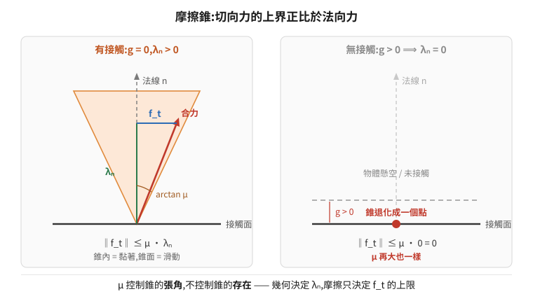
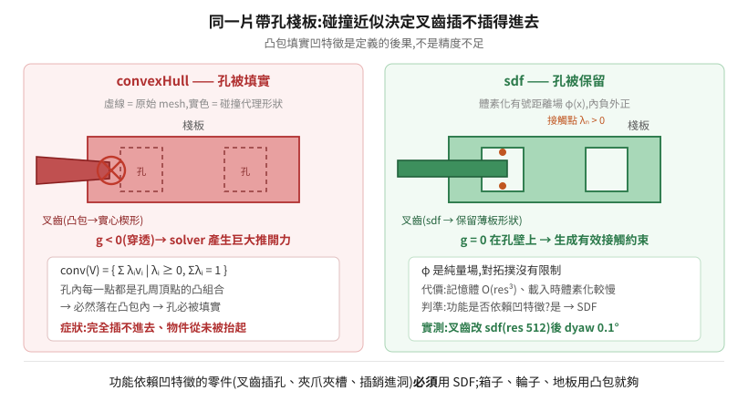

13 · 接觸與抓握的第一性原理:為什麼調摩擦之前必須先看幾何
夾爪夾不住、叉齒叉不起來、物件在載具上滑掉——這類問題最常見的處理順序是「調摩擦係數」。本篇要說明的是:這個順序在相當多的情況下從一開始就錯了,而且錯得可以從接觸力學的定義直接推出來,不必靠試誤。
推導的終點是一條很短的結論:
摩擦係數 μ 是一個乘數,乘在一個可能為零的量上。
底下把這句話逼出來,然後說明它在工程上的三個後果。
延伸閱讀:09 物理模擬基礎(timestep、CCD、solver、PD)、10 場景資產的物理結構(材質綁定、質量比)。
1. 不穿透這件事,數學上怎麼表達
兩個剛體不能互相穿透。這句話要變成數值方法能求解的東西,得先寫成約束。
定義 gap function g(q):兩個物體最近點之間的有號距離(signed distance)。分開時 g > 0,恰好接觸時 g = 0,穿透時 g < 0。
再定義法向接觸力大小 λₙ:接觸點上沿著法線方向的力。
單邊接觸(unilateral contact)必須同時滿足三個條件,合稱 Signorini 條件:
g ≥ 0 (不穿透)
λₙ ≥ 0 (接觸力只能推、不能拉 —— 這是「單邊」的意思)
g · λₙ = 0 (互補條件)
第三條是關鍵。它說 g 和 λₙ 不能同時非零:
- 物體分開(
g > 0)→ 必然λₙ = 0; - 有接觸力(
λₙ > 0)→ 必然g = 0。
這種「兩個非負量的乘積為零」的結構叫線性互補問題(Linear Complementarity Problem, LCP),是所有剛體接觸求解器的骨架。PhysX、Bullet、MuJoCo 求的都是它的某種變形。
為什麼是互補而不是彈簧?也可以用罰函數法(penalty method):穿透多少就給多少反彈力,
λₙ = k·max(0, −g)。這樣好寫,但k要很大才不會明顯穿透,而大k讓系統變剛性(stiff),需要極小的 timestep 才穩定。互補條件是硬約束,不需要調k,代價是要解 LCP。兩條路線各有引擎採用,理解 Signorini 就理解了主流那一條。
2. 摩擦錐:切向力的上界
法向有了,切向呢?庫倫摩擦定律(Coulomb friction)把切向力 f_t 限制在一個錐體內:
黏著(stick),相對切向速度 v_t = 0:
‖f_t‖ ≤ μ_s · λₙ
滑動(slip),v_t ≠ 0:
f_t = −μ_d · λₙ · (v_t / ‖v_t‖)
把 (f_t, λₙ) 畫在空間裡,可行域是一個以法線為軸、半頂角 arctan(μ) 的圓錐——摩擦錐。力落在錐內是黏著,落在錐面上是滑動,錐外不可能。

核心推論
把 Signorini 的互補條件代進摩擦錐:
g > 0 ⟹ λₙ = 0 ⟹ ‖f_t‖ ≤ μ · 0 = 0
沒有接觸點,摩擦力恆為零,無論 μ 設多大。
幾何上,λₙ = 0 時摩擦錐退化成原點的一個點——可行域只剩下零向量。μ 控制的是錐的張角,不是錐的存在。
所以接觸問題的責任是分層的,而且順序不可交換:
| 層 | 決定什麼 | 由誰決定 |
|---|---|---|
| 幾何 | λₙ 存不存在(有沒有接觸點、在哪裡、法線朝哪) |
碰撞近似 + 位姿 |
| 摩擦 | f_t 的上界(咬住之後會不會滑) |
材質 μ + 綁定 |
| 求解 | 兩者的數值精度(殘差、抖動) | solver 迭代、質量比、timestep |
症狀對應:
| 症狀 | 幾乎必然是哪一層 |
|---|---|
| 完全咬不進去、物件從未被抬起 | 幾何(λₙ 根本沒生成,或生成在錯的地方) |
| 抬得起來,但移動中滑掉、放下時歪 | 摩擦(f_t 上界不足) |
| 抖動、下陷、接觸處嗡嗡震盪 | 求解(迭代不足 / 質量比懸殊) |
第一列的情況下調 μ 完全沒有意義。這不是「通常沒用」,是數學上不可能有用。
3. 第一種誤差:g 是從哪裡算出來的——碰撞近似是有損編碼
上一節說「沒有接觸點就沒有摩擦」。那接觸點怎麼判定的?關鍵在於:g 不是從原始 mesh 算的。
原始 mesh 動輒數萬個三角形,每個 timestep 對每一對物體做三角形-三角形相交測試,代價不可接受。所以引擎先把 mesh 編碼成一個便於求 g 的代理形狀,之後所有接觸判定都在代理形狀上做。
這個編碼是有損的。 損掉什麼,決定了哪些任務做不成。
| 碰撞近似 | 代理形狀是什麼 | 能表達凹陷/孔洞? | g 怎麼求 |
代價 |
|---|---|---|---|---|
convexHull |
含所有頂點的最小凸集 | ❌ 定義上不能 | GJK / EPA,很快 | 低 |
convexDecomposition |
拆成 N 個凸塊的聯集 | 部分(取決於 N) | N 次凸-凸判定 | 中 |
sdf |
體素化的有號距離場 φ(x) |
✅ | 查表 + 三線性插值 | 記憶體 O(res³) |
boundingCube / boundingSphere |
外接盒 / 球 | ❌ | 極快 | 極低 |
meshSimplification |
簡化後的三角網格 | ✅ | 較慢 | 中高 |
none(原始三角網) |
原始三角形 | ✅ | 慢,且只能當靜態碰撞體 | 高 |
凸包為什麼對「帶孔薄板」必死
凸包的定義:
conv(V) = { Σ λᵢ vᵢ | λᵢ ≥ 0, Σ λᵢ = 1, vᵢ ∈ V }
也就是頂點集合 V 所有凸組合的集合。
現在考慮一片有叉孔的棧板。孔洞內部的任何一點,都可以寫成孔周圍那些頂點的凸組合——所以它必然落在 conv(V) 內。這不是近似誤差,是定義的直接後果:凸包會把每一個凹特徵填實。
於是:
- 棧板的叉孔被填成實心 → 叉齒想插入時
g < 0(穿透)→ solver 產生巨大的推開力; - 叉齒本身若也是薄板 + 凸包,會被補成一個實心楔形,插入時同樣是「兩個實心體互相擠壓」。
結果不是「夾不緊」,是插不進去。而這正好落在第 2 節症狀表的第一列。

SDF 為什麼能救,以及它的代價
Signed Distance Field:把空間切成體素,每個體素存「該點到物體表面的有號距離」φ(x)(內部為負、外部為正)。
它是一個純量場,不是一個凸集,所以對拓撲沒有任何限制——孔洞、凹槽、薄殼都能表達。g 直接由 φ 查值加三線性插值得到,不需要凸性假設。
代價:
- 記憶體
O(res³)。解析度res是每軸的體素數,512 對一個叉齒等級的零件是合理的;整台車或整個場景用 512 會爆。 - 建構時間:載入時要體素化,大物件明顯變慢。
- 只對動態剛體必要:靜態環境用
triangleMesh就好,不需要付 SDF 的代價。
實務上的判準很簡單:這個零件的功能是否依賴某個凹特徵? 叉齒插叉孔、夾爪夾凹槽、插銷進孔——是,就要 SDF 或至少足夠細的凸分解。單純的箱子、輪子、地板——不是,凸包就夠。
4. 第二種誤差:contactOffset / restOffset——為什麼「剛好接觸」在數值上不存在
離散時間積分下,g 精確等於 0 幾乎不可能命中——上一步還在 g = 0.3 mm,下一步已經 g = −0.5 mm。所以引擎在物體外面包兩層殼:
contactOffset(d_c):g < d_c就開始生成接觸約束。提早介入,讓 solver 有時間反應。restOffset(d_r):靜止平衡時g收斂到d_r,而不是 0。
必須 d_c > d_r。
d_c太小 → 高速接近時,兩步之間就跨過了整個殼層,約束根本沒被生成 → 穿模。d_c太大 → 物體看起來浮在空中(靜止間隙就是d_r,但接觸提早生效會讓行為變軟)。
這解釋了一個常見的無效修法:穿模不是靠加大 solver 迭代次數解決的。迭代求解的是已經建立的約束;約束沒被建立時,迭代一萬次也是零。穿模要調的是 contactOffset、timestep,或開 CCD(見 09 篇 §3)。
5. 質量比:被忽略的隱藏參數
接觸約束最後交給迭代式 solver(PGS / TGS)求解。它把所有約束組成一個大系統,逐個投影、迭代 N 次——這不是精確解,是收斂中的近似解。
兩個接觸物體的質量比直接影響這個系統的條件數。比值越懸殊,收斂越慢,同樣迭代次數下的殘差越大。
實測參考(堆高機叉取):叉齒 50 kg 對棧板 20 kg(2.5:1)可穩定夾持。若把被搬物調到 100 kg 以上而迭代次數不變,症狀是「叉起來但一轉彎就滑掉」——那是殘差被甩出來的,不是摩擦不夠。
所以「物件太重會滑」的正確處理不一定是加摩擦,而是先問:質量比是多少?迭代夠嗎? 這是第 2 節症狀表第三列的情況。
6. 實案:叉齒從 convexHull 改成 sdf
一台堆高機 AMR 在模擬裡叉不起棧板。表面症狀是「棧板在整個裝載窗口內完全沒被抬起」(z 變化 0.00007 m),AMR 空車駛離。
當時的處置順序是先調摩擦——把物理材質的 staticFriction 從 0.8 一路加到 5.0(木對鋼的真實值是 0.3~0.5,5.0 高了一個數量級)。結果:
| 組態 | 放置誤差 dxy | 偏航誤差 dyaw |
|---|---|---|
| μ=0.8 + convexHull | 127.6 cm | 66.3° |
| μ=5.0 + convexHull | 4~13 cm | 0.3~1.1° |
看起來「摩擦有效」,於是結論被歸給摩擦。但用 dump_collider 逐個查碰撞近似後發現:場景裡棧板本體、傾斜架都已經是 sdf,只有承重的那根叉齒 fork_liftA1 是 convexHull。
改成 sdf(resolution 512)之後:
| 組態 | dxy | dyaw |
|---|---|---|
| μ=5.0 + sdf | 9.7 cm | 0.1° |
後續實測更說明問題:把高摩擦材質的綁定關掉(接觸面回到 PhysX 預設 μ≈0.5,那是木對鋼的合理值),抓握依然成立——因為幾何已經對了。μ=5.0 那個非物理值當初是在補償一個幾何錯誤。
摩擦真正的貢獻在另一個地方。同一條路線的 A/B:
| 條件 | 深度誤差(逐輪) | 橫向誤差 |
|---|---|---|
| 高摩擦材質未綁到承重面 | 3.2 → 10.3 → 20.2 cm | 2.1 / 1.5 / 1.4 / 9.3 cm |
| 高摩擦材質已綁 | 7.8 → 12.9 cm | 0.0 / 0.9 cm |
摩擦治側滑,不治深度。 這與第 2 節的分層完全一致:f_t 上界提高,抑制了切向滑移;而深度誤差來自別的機制(見 §7)。
兩個可帶走的教訓
- 調參順序:幾何(碰撞近似)→ 質量與慣量 → 接觸參數(offset)→ 摩擦。順序錯了會得到一堆「有效但說不出為什麼」的魔數。
- 「參數有值」≠「參數作用在你以為的那個面上」。上面那個高摩擦材質確實存在、確實有 5.0/4.0,但
ComputeBoundMaterial("physics")查下去,承重叉齒與棧板的綁定都指向外觀材質——它只綁在不接觸的傾斜架上。查生效要看綁定的解算結果,不是看材質存不存在(見 10 篇)。
7. 第三種誤差:開環致動對上可移動目標
上一節留了一個未解的:深度誤差為什麼會逐輪累積(3.2 → 10.3 → 20.2 cm),而且摩擦治不了。
機制:叉齒以固定行程插入。若目標已經比標稱位置偏深 δ,叉齒接觸到它之後仍會走完剩餘行程,把它再往裡推。下一輪的初始偏差就變大。
寫成離散動態系統:
x_{k+1} = x_k + Δ(x_k), 其中 Δ > 0
只要 Δ 恆正,序列單調發散。沒有任何摩擦或碰撞參數能改變這一點,因為問題不在接觸,在控制迴路裡沒有負回饋項。
三種修法,對應三種不同的工程決策:
| 修法 | 做什麼 | 性質 |
|---|---|---|
| 加感知回授 | 先量測目標實際位置,再決定插入行程 | 治本,但要有感測器/量測管線 |
| 週期性重置 | 偏差超過門檻就把場景拉回真值 | 止血,適合展示與長跑 |
| 讓目標不可移動 | 固定夾具、限位擋塊 | 改變問題本身 |
值得注意的是:這個發散在真實世界也會發生。真堆高機也會把棧板越推越深。模擬忠實地重現了它,這是模擬對的地方,不是模擬的缺陷。把它當 bug 去調物理參數,會白費很多時間。
8. 為什麼模擬器不會告訴你哪裡錯了
上面所有失效模式有一個共同點:全程沒有任何錯誤訊息。
原因是結構性的。編譯器有「合法程式」這個規格,所以能指出你違反了它。物理求解器沒有「非法狀態」這個概念——它的契約是「給定 t 的狀態,回傳 t+Δt 的狀態」,而 NaN 是一個合法的 float,10⁶ 公尺是一個合法的座標,λₙ = 0 是一個合法的解。
推論:在物理模擬裡,「沒有報錯」攜帶零資訊。
所以除錯只能靠主動量測,而且要量對層:
| 要回答 | 量什麼 |
|---|---|
| 有沒有接觸 | 碰撞近似型別、接觸點數、λₙ |
| 咬住後有沒有滑 | 被搬物相對承載件的位姿(不變量),整趟連續取樣 |
| 位姿對不對 | 剛體查詢的即時世界座標 vs 真值,並確認取的是模擬值不是檔案裡的 authored 值 |
| 誤差來自哪一層 | 分解成「車體定位 / 插入深度 / 橫向滑移 / 偏航」四項分別看 |
「相對承載件的位姿」這個不變量特別重要:絕對座標在載具行進時本來就一直變,拿絕對座標看不出「東西有沒有相對夾持面滑掉」。整趟中不變 = 沒滑;單調漂移 = 真的在滑。
9. 一頁總結
Mesh(數萬三角形)
│
▼ 碰撞近似 —— 有損編碼,凸包會填實所有凹特徵
代理形狀
│
▼ narrow phase:在代理形狀上求 g、接觸點、法線
g, n
│
▼ Signorini:g ≥ 0, λₙ ≥ 0, g·λₙ = 0
λₙ ────────────────┐
│ │
▼ 摩擦錐 │ g > 0 ⟹ λₙ = 0 ⟹ f_t = 0
‖f_t‖ ≤ μ·λₙ ◀──────┘ (μ 再大也一樣)
│
▼ solver 迭代(PGS/TGS);質量比影響條件數
接觸力 → 積分 → 下一個狀態(永遠有解,永遠不報錯)
- 幾何決定
λₙ存不存在;摩擦只決定f_t的上限。順序不可交換。 - 凸包填實凹特徵是定義的後果,不是精度問題;功能依賴凹特徵的零件必須用 SDF。
- 摩擦治側滑,不治「插不進去」,也不治「開環行程造成的累積偏差」。
- 質量比是隱藏參數;抖動與滑脫可能是 solver 殘差,不是摩擦不足。
- 模擬器永遠給得出答案,所以「沒報錯」不是訊號。要主動量,而且要量對層。
相關
- 09 物理模擬基礎 — timestep/substep、CCD、joint drive PD、PGS/TGS、reset 語意
- 10 場景資產的物理結構 — 剛體與碰撞分層、質量比、物理材質綁定與執行期補綁
- 11 即時位姿與放置精度 — 讀位姿的四種方法、把放置精度變成可驗收的量測管線